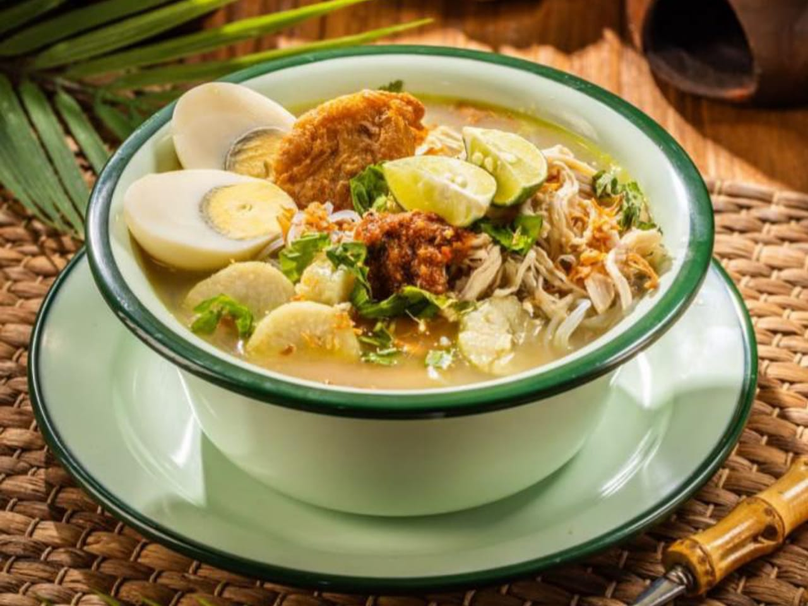
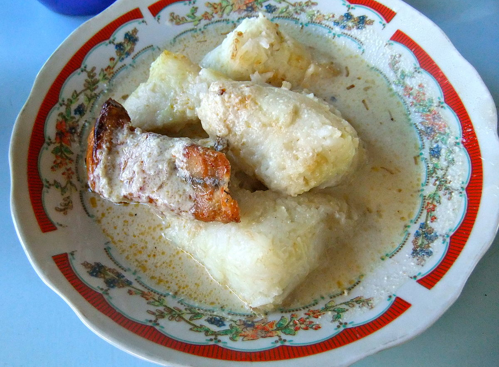
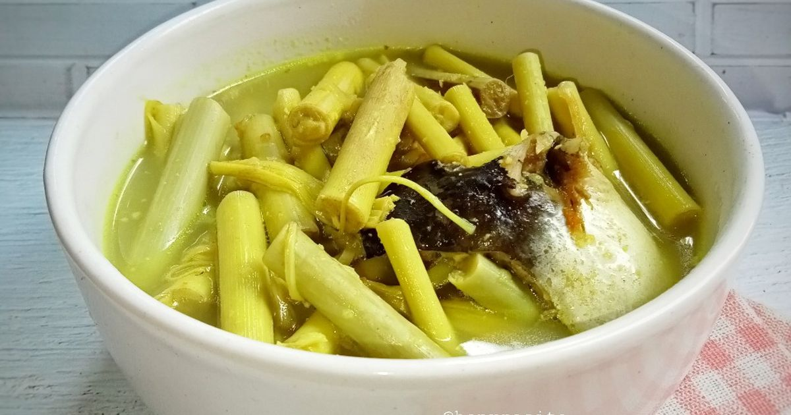
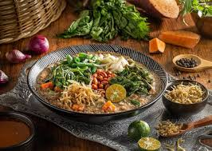
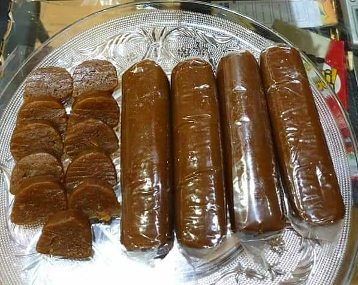

Soto Banjar
Sup ayam khas Banjarmasin dengan cita rasa rempah dan harum kayu manis.

Ketupat Kandangan
Ketupat khas Kalimantan Selatan yang disajikan dengan ikan gabus asap dan kuah santan.

Juhu Singkah
Makanan khas Dayak berbahan rebung muda, dimasak dengan kuah rempah.

Bubur Pedas
Bubur khas Melayu Sambas berisi sayur, rempah, dan kacang yang gurih pedas.

Ayam Cincane
Makanan khas Samarinda dengan ayam yang dimarinasi bumbu merah manis gurih.

Lempok Durian
Oleh-oleh populer khas Kalimantan berbahan durian asli tanpa campuran tepung.